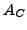
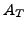
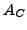
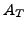

The assumption that instrumental and environmental artifacts use to be additive in terms of intensity may create needs to transform amplitudes in mag from the comparison into the target spectra, if the conditional CINDERELLA mode is applied. The amplitude transformation is only performed to obtain conditional sigs.
Three different strategies to adjust comparison amplitudes are offered, according to the specifications in the .cnd file.
 ,
of the comparison and target time series, respectively, to transform the comparison amplitude  into a target amplitude  according to
,
of the comparison and target time series, respectively, to transform the comparison amplitude  into a target amplitude  according to
 , respectively, as measures of the photon noise levels and evaluates the transformed amplitude according to
, respectively, as measures of the photon noise levels and evaluates the transformed amplitude according to
Example. The sample project transam-mean contains the same input as the project CinderellaNative (p. ). The time series data are considered to represent millimag photometry. The comparison dataset is assumed to refer to a 5 mag star, whereas the target datasets shall correspond to a 15 mag star. The resulting time series input files are 000000.transam-mean.dat 000001.transam-mean.dat to 000008.transam-mean.dat. The keyword
). The time series data are considered to represent millimag photometry. The comparison dataset is assumed to refer to a 5 mag star, whereas the target datasets shall correspond to a 15 mag star. The resulting time series input files are 000000.transam-mean.dat 000001.transam-mean.dat to 000008.transam-mean.dat. The keyword
transam:mean
in the file transam-mean.cnd forces CINDERELLA to employ the mean magnitudes of the datasets for the amplitude transformation.
Example. The sample project CinderellaNative contains an amplitude transformation based on the rms residual, which is the default method.
Example. The sample project transam-ppsc contains the same input as CinderellaNative (p. ). The line
). The line
transam:ppsc
in the file transam-ppsc.cnd forces CINDERELLA to employ the residual point-to-point scatters of the datasets for the amplitude transformation.
Example. The sample project transam-none contains the same input as CinderellaNative (p. ). The line
). The line
transam:none
in the file transam-none.cnd switches off the amplitude transformation.


Next: Composed Mode
Up: Conditional Mode
Previous: Spectral significance threshold
Contents
Piet Reegen
2009-09-23